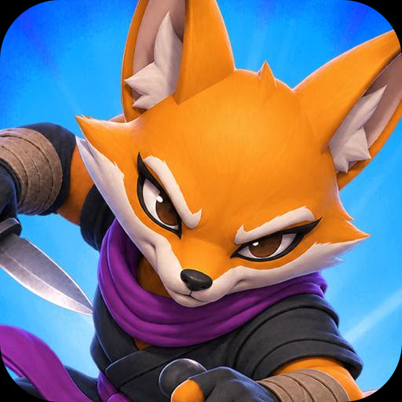
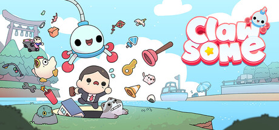
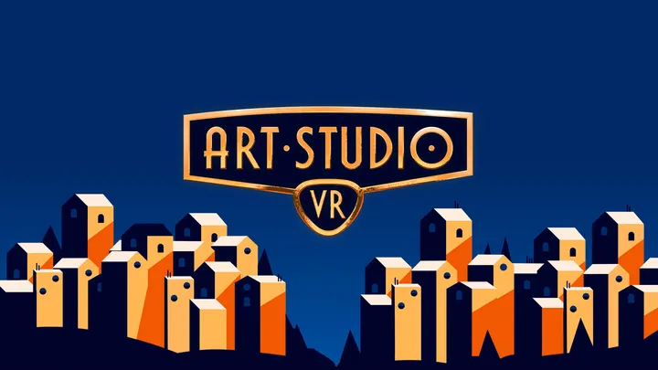
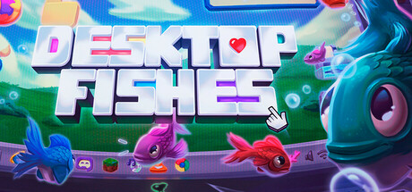
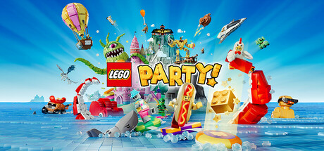
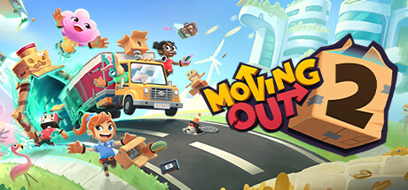
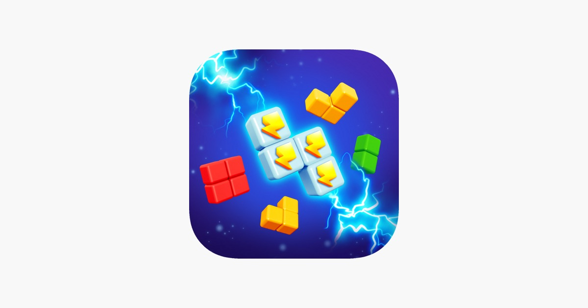

Daniel Santalla (@danielsantalla)
Technical & VFX Artist working in Unity.
I create real-time VFX, shaders and animation, and implement them in Unity. My work includes LEGO® Party! and Party Animals, as well as independent games and VR projects.
Looking for a Technical Artist or VFX Artist? Let’s talk about your game.
More about me →
Now

Torpedo Labstechnical art & VFX gameplay, animation & effects2024 –
Cometa Gamestechnical artist Clawsome · in development2026 –Independent projects

Art Studio VRsolo developer painting on Meta Quest2020
Desktop Fishessolo developer pixel-art idle aquarium2025Selected work

LEGO® Party!VFX & technical art SMG Studio
Moving Out 2technical & VFX artist SMG StudioParty Animalsshaders & VFX Recreate Games2020Chaos Unleashed!technical art & VFX animation & Unity gameplayBingo Paradise!technical art & VFX shaders & animation
Sky Partyanimation & VFX gameplay effects